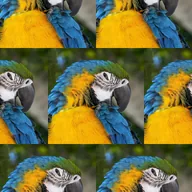

เรียงต่อ

ทำซ้ำเลเยอร์เพื่อเติมเต็มหน้าจอ เพิ่มการครอบตัดเพื่อให้ไทล์เล็กลง พร้อมตัวเลือกการมิเรอร์ ออฟเซตแถว และการหมุน มาตราส่วนแบบเก่าจะคงโปรเจกต์เดิมไว้
การตั้งค่า
| การตั้งค่า | ประเภท | ช่วงค่า | ค่าเริ่มต้น |
|---|---|---|---|
| ครอบตัด | ตัวเลข | 0.005 ถึง 20 | 1 |
| ออฟเซต | ตัวเลข | -100 ถึง 100 | 0 |
| สะท้อน | เปิดหรือปิด | – | ปิด |
| ออฟเซตแนวตั้ง | เปิดหรือปิด | – | ปิด |
| มุม | มุม | -1800° ถึง 1800° | 0° |
| การปรับขนาด | ตัวเลือก | ครอบตัด, มาตราส่วนแบบเก่า | ครอบตัด |